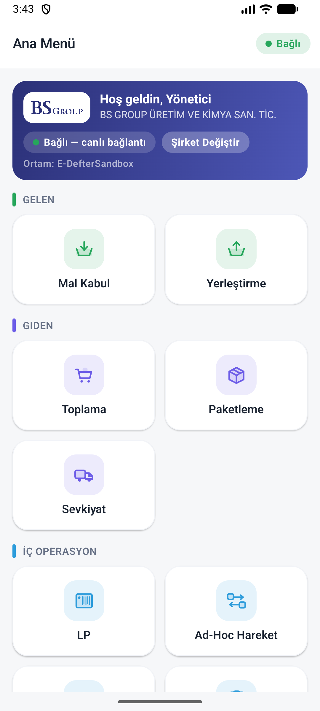
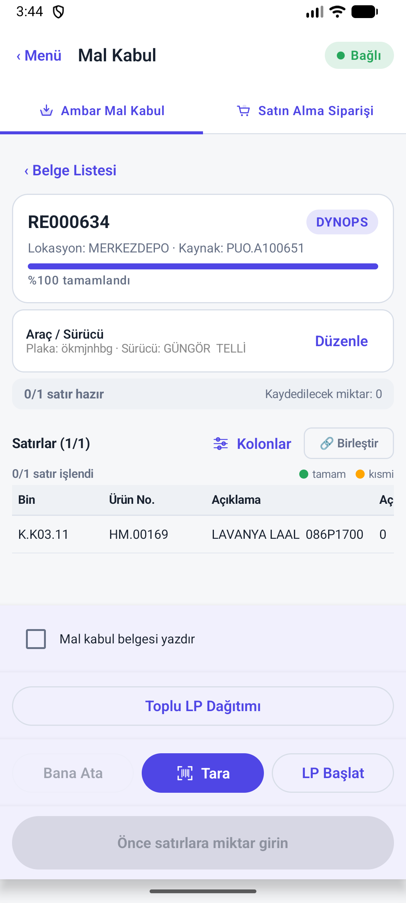
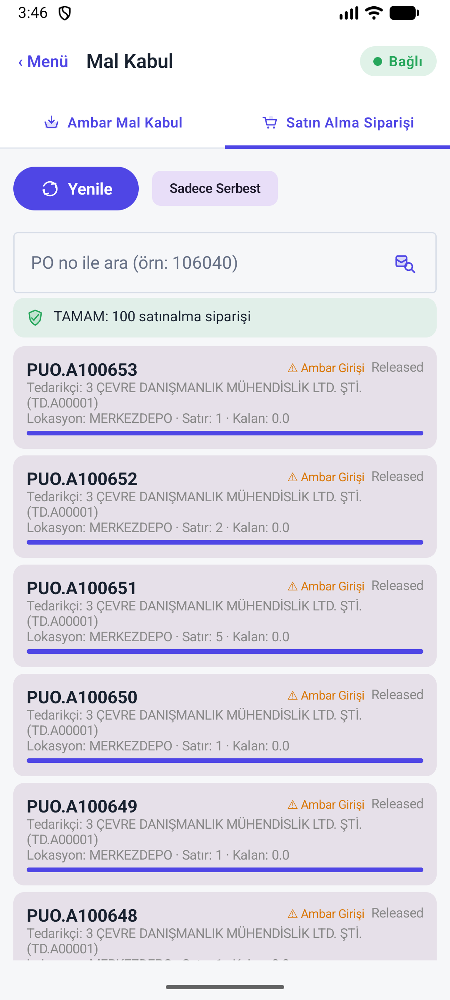
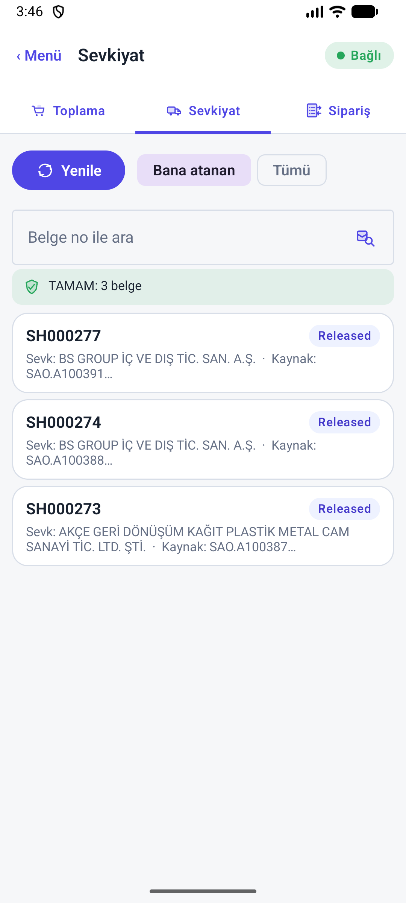
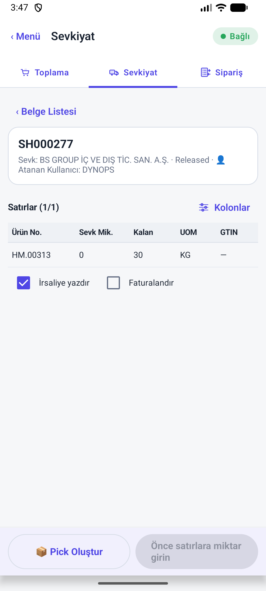
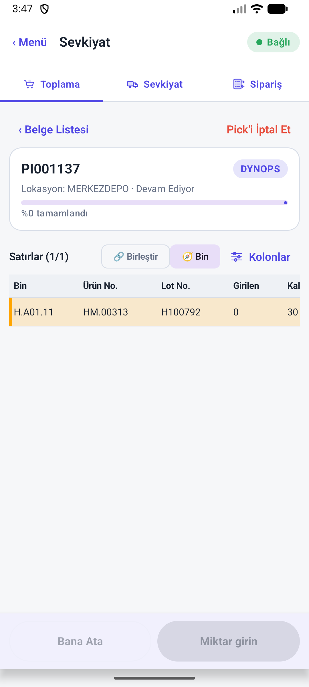
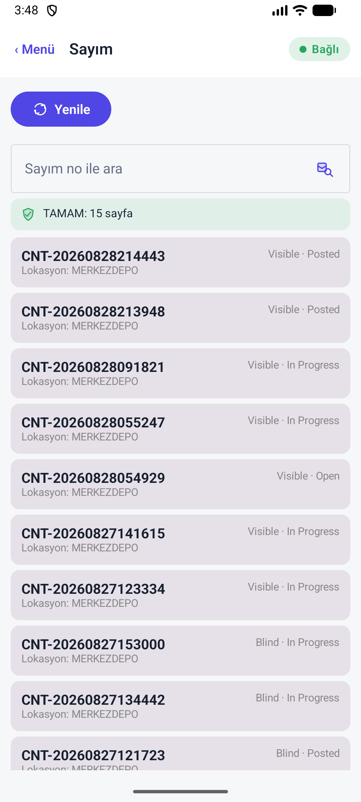
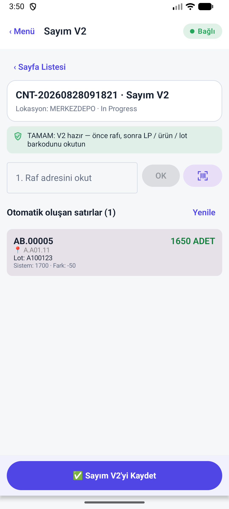
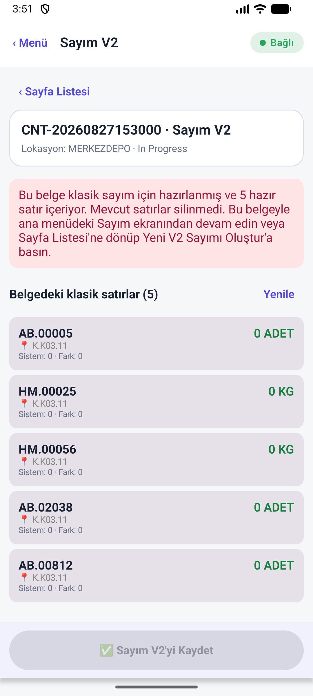

Mal kabul, sevkiyat ve sayım canlıya geçiş raporu
Bu rapor yalnız bu turda yeniden çalıştırılan testleri, BADE paketinde görülen ekranları ve kaynak koddan doğrulanan BC yazma zincirini içerir. Önceki rapordaki PASS ifadeleri otomatik olarak devralınmamıştır. Uygulama kaynak kodu değiştirilmemiştir.
1. Yönetici özeti
Yeşil birim test sonucu, gerçek depo operasyonunun geçtiği anlamına gelmiyor.
Mal kabul
Bağlı BADE oturumunda yalnız tamamlanmış RE000634 görüldü. Yeni LP'siz, tek LP'li, çok LP'li ve ikinci parçalı dalga bu turda post edilemedi. Kaynak kod incelemesinde tek LP satır güncellemesinin tekrar çağrıda LP miktarını çoğaltma riski ve çoklu LP'de Purchase Receipt Line LP boşluğu bulundu.
Sevkiyat
SH000277 ve PI001137 açıldı; 30 KG kalan ve H100792 lotu görüldü. Belge DYNOPS'a atanmış olduğundan Yönetici oturumunda miktar/post aksiyonu çalıştırılmadı. Aynı kaynak satırında birden fazla LP kod tarafından “ambiguous” kabul edilip post durduruluyor.
Sayım
V2 ve klasik/kör belgeler BADE ekranında ayrıştı. Mevcut V2 satırında sistem 1700, sayım 1650 ve fark -50 görüldü. Yanlış raf, tekrar LP okutma, sıfır sayım ve yeni post bu turda yeniden koşturulmadı.
2. Test edilen paket gerçekten neydi?
Paket adı aynı olsa da imza ve APK dosyası aynı değil.
| Kontrol | Bağlı emülatör | Yayımlanan BADE release | Sonuç |
|---|---|---|---|
| Application ID | com.dynops.bcwms.bade | com.dynops.bcwms.bade | AYNI |
| Sürüm | 1.14.69-bade / versionCode 200069 | 1.14.69-bade / versionCode 200069 | AYNI |
| APK SHA-256 | 65e7da36…df459e | 80ee6006…8756a1 | FARKLI |
| İmza | Android Debug · SHA-256 b28316a8…e2204 | CN=DynOps BCWMS · SHA-256 ea7710af…1eb | FARKLI |
| Üstüne kurulum | INSTALL_FAILED_UPDATE_INCOMPATIBLE: signatures do not match | BLOCKED | |
3. Terminalde çalıştırılan kontroller
PASS yalnız yeniden çalıştırılan dar kapsam için kullanıldı; post yapılmayan senaryo PASS sayılmadı.
| Alan | Kontrol | Gözlenen sonuç | Durum |
|---|---|---|---|
| Android | BADE unit testleri, --rerun-tasks | 150 test, 0 failure, 0 error; 62/62 Gradle görevi yeniden yürüdü. | PASS · UNIT |
| Android | BADE lint + debug assemble | Derleme başarılı. Lint: 72 Warning, 13 Information, Error/Fatal yok. | PASS · BUILD |
| BADE bağlantı | Paket/şirket/ortam | com.dynops.bcwms.bade, BS GROUP, E-DefterSandbox, “Bağlı — canlı bağlantı”. | PASS · READ |
| Mal kabul | Ambar Mal Kabul listesi | 1 belge: RE000634. | PASS · READ |
| Mal kabul | RE000634 detay | %100 tamamlandı, açık miktar 0, 0/1 satır hazır, kaydedilecek miktar 0. | PASS · READ |
| Satınalma | Satın Alma Siparişi listesi | 100 kayıt yüklendi; görünür satırların kalan miktarı 0. Açık güvenli kabul fixture'ı yok. | VERİ YOK |
| Sevkiyat | Ambar sevkiyat listesi | SH000277, SH000274, SH000273 yüklendi. | PASS · READ |
| Sevkiyat | SH000277 detay | HM.00313, 0 sevk, 30 KG kalan. Post düğmesi “Önce satırlara miktar girin”. | PASS · READ |
| Pick | PI001137 detay | H.A01.11, HM.00313, lot H100792, 0 girilen / 30 kalan. Belge DYNOPS'a atanmış; Yönetici mutasyonu kapalı. | ATAMA BLOKAJI |
| Sayım | Liste ve durum ayrımı | 15 belge; Visible/Blind ve Open/In Progress/Posted durumları görüldü. | PASS · READ |
| Sayım | Posted belge koruması | “Kaydedilmiş ve kapatılmıştır; terminalden değiştirilemez.” Üç mutasyon düğmesinin parent node'u enabled=false. | PASS · UI GUARD |
| Sayım V2 | CNT-20260828091821 detay | AB.00005 / A.A01.11 / lot A100123; sistem 1700, sayım 1650, fark -50. | PASS · READ |
| Kör sayım | CNT-20260827153000 | 5 klasik satır korundu; V2 ekranı “klasik sayımdan devam edin” uyarısı verdi. | PASS · GUARD |
| BC/AL | Permission, prefix, obsolete audit | Üç script exit 0. Translation script exit 0 fakat 2466 kaynak birimine karşı tr/de dosyalarında yalnız 25 birim; 2441 eksik için WARN. | PASS + WARN |
4. İstenen senaryo matrisi: ne yapıldı, ne yapılamadı?
“NOT RUN” gerçek operasyon sonucu alınmadığını ifade eder; yeşil test sayısına eklenmedi.
| ID | Senaryo | Bu turdaki kanıt | Durum | Canlı öncesi gereken |
|---|---|---|---|---|
| REC-01 | LP'siz tam mal kabul | Açık satınalma/mal kabul fixture'ı yok; post edilmedi. | NOT RUN | Yeni PO → qty → post → Posted Whse Receipt, Purch. Receipt, ILE, Value, Warehouse Entry karşılaştır. |
| REC-02 | LP'siz parçalı kabul (örn. 10/30, sonra 20/30) | RE000634 tamamlanmış; yeni dalga açılamadı. | NOT RUN | İki ayrı post; açık miktar ve Qty. Received doğrula. |
| REC-03 | Tek LP'li kabul | Kaynak yol mevcut; yeni belgeyle çalıştırılmadı. Tek satır tekrar PATCH riskli. | KOD RİSKİ | Aynı satırı 10 → 5 düzenle; LP toplamının 5 kaldığını doğrula. |
| REC-04 | Çok LP'li kabul | Toplu LP action ve teknik satır bölme kodu var; yeni post yok. | NOT RUN | En az 3 LP ve eşit olmayan dağılım; her BC tablosunda birebir LP doğrula. |
| REC-05 | Çok LP + farklı lot + SKT + tedarikçi lotu | UI/payload ve AL reservation kodu mevcut; cihaz postu yok. | NOT RUN | 3 LP / 3 lot / 3 SKT; Lot No. Info + Reservation + ledgers kontrolü. |
| REC-06 | LP oluştur, yenile, kaldığı yerden devam et | Unit helper testi var; yeni bağlı belge üzerinde yapılmadı. | UNIT ONLY | LP başlat → satır gir → app öldür/aç → hazır satır ve LP korunmalı. |
| REC-07 | Mal kabul sonrası LP bazlı yerleştirme | Bu turda yeni posted receipt/put-away oluşmadı. | NOT RUN | Her LP ayrı Take/Place satırı ve hedef rafla register edilmeli. |
| SHP-01 | LP'siz sevkiyat | SH000277 açık; miktar/post yapılmadı. | NOT RUN | Loose stock seç, post et, LP alanlarının boş ve stok hareketinin doğru olduğunu doğrula. |
| SHP-02 | Tek LP'den kısmi sevkiyat | PI001137 atanmış; miktar değişmedi. | NOT RUN | LP 10 → sevk 4 → LP 6; ILE -4 ve tek ItemRemoved kaydı. |
| SHP-03 | Aynı kaynak satırını iki/çok LP'den tamamlama | Bir Warehouse Shipment Line yalnız tek LP No. tutuyor; birden fazla LP çözülürse kod postu durduruyor. | DESTEKLENMİYOR | Satırı LP bazında bölüp her posted line/ILE ile eşleştiren tasarım ve regresyon testi. |
| SHP-04 | Çok lotlu sevkiyat | Çok lot seçimi pick akışına yönleniyor; bu turda post edilmedi. | NOT RUN | 2 lot, iki pick satırı, tek/çok LP kombinasyonlarını ayrı çalıştır. |
| SHP-05 | Post cevap hatası + belge 404 doğrulaması | Yalnız 3 helper unit testi; gerçek yeni post yok. | UNIT ONLY | Commit/timeout simülasyonu; posted doc + ILE + LP ledger ile sonuç doğrula. |
| CNT-01 | Klasik görünür sayım | Liste var; satır girme/post yok. | NOT RUN | Sistem=sayım, pozitif fark, negatif fark, sıfır sayım. |
| CNT-02 | Kör sayım ve yeniden sayım | 5 satırlı kör belge görüldü; mutasyon yok. | READ ONLY | 2/3 sayıcı uyumsuzluğu → Recount Required → tekrar say → post. |
| CNT-03 | V2 ürün/lot QR | Mevcut satır ve -50 fark okundu; yeni scan yapılmadı. | READ ONLY | Yeni ScanId ile ekle, retry et, miktarın ikiye katlanmadığını doğrula. |
| CNT-04 | V2 doğru raf/yanlış raf LP | Bu turda yeniden okutulmadı. | NOT RUN | Doğru raf PASS; yanlış raf 400 ve sıfır mutasyon. |
| CNT-05 | Çok LP + loose stok aynı ürün/lot/raf | Unit veya cihaz E2E testi yok. | NOT RUN | 2 LP + loose satır; toplam fark ve phys. inventory journal/ILE sonucu. |
| CNT-06 | Sayım postu ve BC defterleri | Mevcut Posted belge yalnız okundu; yeni post yok. | NOT RUN | Count Sheet → Phys. Inv. Journal → ILE/Warehouse Entry → LP line eşitliği. |
5. Kaynak koddan bulunan kritik açıklar
Bunlar test verisi eksikliği değil; mevcut kod davranışından çıkan somut bulgulardır.
| Öncelik | Bulgu | Kod kanıtı | Olası sonuç |
|---|---|---|---|
| P0 | Exact release APK test edilmedi | Kurulu APK Android Debug imzalı; release DynOps imzalı ve update incompatible. | Test edilen cihaz davranışı canlıya verilecek byte dizisini kanıtlamıyor. |
| P0 | Tek LP'li receipt PATCH idempotent değil | ReceiptMgmt.ConfirmLine her PATCH'te LPMgt.AddLine çağırıyor; AddLine her seferinde yeni LP Line insert ediyor. Eski miktarı bulup güncelleme/silme yok. | Kullanıcı 10'u 5'e düzeltirse veya istek tekrar edilirse LP içeriği 15 olabilir; BC receipt miktarı 5 kalabilir. |
| P0 | Çoklu LP sevkiyat aynı kaynak satırında desteklenmiyor | Warehouse Shipment Line."LP No." tek değer. ResolveWarehouseShipmentLp farklı LP görünce Ambiguous := true; post hata ile duruyor. | Bir sipariş satırını iki paletten sevk etme canlıda bloke olur. |
| P0 | Çoklu LP mal kabulü Purch. Rcpt. Line'a taşınmıyor | CarryLpOntoPostedPurchRcpt yalnız ResolveSingleReceiptLpNo doluysa alan yazar; receipt'te çok LP varsa boş dönüp tüm Purch. Rcpt. Line yazımını atlıyor. | Posted Whse Receipt/ILE/Warehouse Entry LP'li olsa bile satınalma alış satırı LP'siz kalır; BC rapor/join beklentisi bozulur. |
| P1 | Sayım LP kimliği phys. inventory ledger'a açıkça taşınmıyor | CountMgmt.PostSheet Item Journal Line'a item/location/bin/lot/serial yazar; LP alanı veya post sonrası ILE LP reconcile yok. LP Line miktarı ayrı güncellenir. | Count Sheet LP'yi bilir, fakat oluşan ILE/Value/Warehouse hareketinde LP izi boş kalabilir. |
| P1 | AL testleri canlı güvence sağlamıyor | macOS'ta AL suite çalıştırılamadı. CountPostTests içindeki Assert.IsTrue(ItemJournalLine.Count() >= 0) her zaman doğrudur. Bulk receipt ve multi-LP shipment için AL testi yok. | “AL testleri var” ifadesi bu kritik zincirlerin doğrulandığı anlamına gelmiyor. |
| P2 | Android 150 test E2E değil | src/androidTest altında test yok. Receipt/ship/count testleri çoğunlukla saf helper, JSON dağıtım ve UI guard fonksiyonlarını test ediyor. | HTTP payload, OData PATCH, BC action, gerçek Compose tıklaması ve post sonucu kapsam dışı. |
6. BC'ye hangi veri gidiyor? Kod zinciri
“VAR” yalnız kaynak kodda açık yazım olduğu anlamına gelir; bu turda canlı BC tablosundan tekrar okunmadı.
| Akış | BC tablo/alan | Kod durumu | Not |
|---|---|---|---|
| Mal kabul | Warehouse Receipt Line · Qty. to Receive / DOPSWHS LP No. / Bin | VAR | Android PATCH → Receipt Line API → ConfirmLine. |
| Mal kabul | Reservation Entry · lot/seri/SKT/tedarikçi lotu | VAR | Takipli üründe PersistItemTracking. |
| Mal kabul | LP Header / LP Line / LP Movement Ledger | VAR | Tekrar PATCH'te duplicate LP Line riski var. |
| Mal kabul | Posted Whse. Receipt Line · LP No. | VAR · SATIR | Source receipt line + item + lot/seri ile çözülüyor. |
| Mal kabul | Posted Whse. Receipt Header · DOPSWHS LP No. | İLK LP | Çok LP'li belgede başlık yalnız ilk LP'yi gösterebilir. |
| Mal kabul | Warehouse Entry / Item Ledger Entry / Value Entry · DOPSWHS LP No. | VAR · SATIR | Posted receipt relation üzerinden damgalanıyor. |
| Mal kabul | Purch. Rcpt. Line · DOPSWHS LP No. | ÇOK LP'DE YOK | Yalnız receipt genelinde tek LP varsa yazılıyor. |
| Sevkiyat | Warehouse Shipment Line · Qty. to Ship / LP No. / SSCC / lot | VAR · TEK LP | Bir satır bir LP taşıyor. |
| Sevkiyat | Posted Whse. Shipment Line/Header | VAR | Satır LP/SSCC; başlık ilk LP. |
| Sevkiyat | Sales Shipment Line / ILE / Value Entry · LP | VAR · TEK LP | Before-commit reconcile LP miktarını düşürüyor; çok LP belirsizliğinde post duruyor. |
| Sayım | DOPSWHS Count Sheet Header/Line | VAR | LP, LP line, lot, seri, 3 sayaç miktarı/flag, varyans tutuluyor. |
| Sayım | Phys. Inventory Item Journal | VAR | Item/location/bin/UOM/lot/seri + calculated/physical qty yazılıyor. |
| Sayım | ILE/Value/Warehouse Entry · LP izi | AÇIK ZİNCİR YOK | Count postunda LP'yi ledger'a damgalayan açık kod bulunmadı. |
7. Ekran kanıtları
Bu görseller bağlı, debug-imzalı BADE paketinden alınmıştır; exact release kanıtı değildir.
{kind=link}

BADE ana menü · E-DefterSandbox · bağlı
{kind=link}

RE000634 · %100 tamamlandı · açık miktar 0
{kind=link}

100 satınalma siparişi · görünür kayıtlar kalan 0
{kind=link}

3 ambar sevkiyatı
{kind=link}

SH000277 · 0 sevk / 30 KG kalan
{kind=link}

PI001137 · H100792 · DYNOPS ataması
{kind=link}

Visible/Blind ve durum çeşitleri
{kind=link}

AB.00005 · sistem 1700 / sayım 1650 / fark -50
{kind=link}

Klasik kör sayım satırlarını V2'de değiştirmeme koruması
8. Adım adım çözüm sırası
Bu turda kod değiştirilmedi. Sonraki çalışma için önerilen sıra:
- Temiz BADE release ortamı: Ayrı emülatöre DynOps imzalı 1.14.69 release APK kur, E-DefterSandbox bağlantısını yeniden yap ve APK hash'ini kanıtla.
- Fixture üret: Bir PO'da en az 60 birim; LP'siz ve LP'li dalgalar için ayrı satır/lot. Bir SO'da aynı item/lotu en az iki LP'ye dağıt.
- Önce test ekle: Receipt PATCH idempotency, bulk receipt → Purch. Rcpt. Line mapping, multi-LP shipment split/reconcile, count LP → ledger mapping.
- P0 kod düzeltmeleri: Receipt LP satırını source identity ile upsert et; outbound satırını LP bazında böl; Purch. Rcpt. Line'ı exact source line ile damgala.
- BADE cihaz E2E: REC-01…07, SHP-01…05, CNT-01…06 matrisi; her posttan sonra BC tablolarını aynı belge/line/LP anahtarıyla oku.
- Go/No-Go: P0 açık 0, kritik NOT RUN 0, exact release hash doğru, BC ledger zinciri ekran görüntüsü/CSV ile kanıtlıysa canlıya al.
9. İzlenebilirlik
Kaynak
Repo commit: 118317b
AL kaynak sürümü: 1.14.0.87
BADE artifact: 1.14.69-bade
Rapor tarihi: 29.08.2026 · Europe/Istanbul
Değişiklik sınırı
Uygulama/AL kaynak kodu değiştirilmedi. Yalnız bu HTML, ekran görüntüsü ve UI XML test kanıtları test-artifacts/gun-sonu-operasyon-qa-2026-08-29/ altında oluşturuldu.
Önemli: Bu rapor mevcut ekran verisini okumakla kod davranışını birbirinden ayırır. “VAR” işareti kaynak kodda yazma zinciri görüldüğünü, “PASS · READ” sunucudan ekran verisi geldiğini, “NOT RUN” ise gerçek mutasyon/post yapılmadığını belirtir.